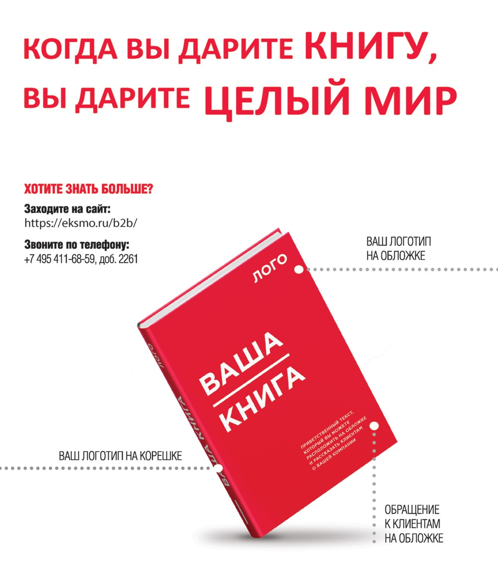

История в бокалах . Список литературы.


Allen, Н. Warner. A History of Wine. London: Faber, 1961.
Allen, H. Warner. Rum. London: Faber, 1931.
Andrews, Tamra. Nectar and Ambrosia:
An Encyclopedia of Food in World Mythology. Santa Barbara: ABC–CLIO, 2000.
Austin, Gregory. Alcohol in Western Society from Antiquity to 1800: A Chronology. Santa Barbara: ABC–CLIO, 1985.
Ballinger, Clint. Beer Production in the Ancient Near East. Unpublished paper, personal communication.
Baron, Stanley. Brewed in America: A History of Beer and Ale in the United States. Boston: Little, Brown, 1962.
Barr, Andrew. Drink: A Social History of America. New York: Carroll & Graf, 1999.
Blackburn, Robin. The Making of New World Slavery. London: Verso, 1997.
Bober, Phyllis Pray. Art, Culture and Cuisine: Ancient and Medieval Gastronomy. Chicago: University of Chicago Press, 1999.
Bowen, Huw V. 400 Years of the East India Company. History Today, July 2000.
Braidwood, Robert, et al. Did Man Once Live by Beer Alone? American Anthropologist 55 (1953): 515–526.
Braudel, Fernand. Civilization and Capitalism: 15th-18th Century. London: Collins, 1981.
Brillat-Savarin, Jean Anthelme. The Physiology of Taste. London: Peter Davies, 1925.
Brown, John Hull Early American Beverages. New York: Bonanza Books, 1966.
Burger-Cola Treat at Saddam Palace. Reuters report, April 25, 2003.
Carson, Gerald. The Social History of Bourbon. New York: Dodd, Mead, 1963.
Cohen, Mark Nathan. Health and the Rise of Civilization. New Haven and London: Yale University Press, 1989.
Counihan, Carole, and Penny Van Esterik, eds. Food and Culture: A Reader. New York and London: Routledge, 1997.
Courtwright, David T. Forces of Habit: Drugs and the Making of the Modern World. Cambridge, Mass.: Harvard University Press, 2001.
Dalby, Andrew. Siren Feasts: A History of Food and Gastronomy in Greece. London: Routledge, 1996.
Darby, William]., Paul Ghalioungui, and Louis Grivetti. Food: Gift of Osiris. London, New York, and San Francisco: Academic Press, 1977.
Darnton, Robert. An Early Information Society: News and Media in Eighteenth-Century Paris. American Historical Review, vol. 105, no. 1: 1-35.
Diamond, Jared. Guns, Germs and Steel. London: Jonathan Cape, 1997.
Dunkling, Leslie. The Guinness Drinking Companion. Middlesex: Guinness, 1982.
Ellis, Ay torn. The Penny Universities: A History of the Coffee-houses. London: Seeker & Warburg, 1956.
Ellison, Rosemary. Diet in Mesopotamia: The Evidence of the Barley Ration Texts (c. 3000–1400 BC). Iraq 43 (1981): 35–45.
Engs, Ruth C. Do Traditional Western European Practices Have Origins in Antiquity?
Addiction Research 2, no. 3 (1995): 227–239.
Farrington, Anthony. Trading Places: The East India Company and Asia, 1600–1834. London: British Library, 2002.
Ferguson, Niall. Empire: How Britain Made the Modern World. London: Allen Lane, 2003.
Fernandez-Armesto, Felipe. Food: A History. London: Macmillan, 2001.
Fleming, Stuart J. Vinum: The Story of Roman Wine. Glenn Mills, Penn.: Art Flair, 2001.
Forbes, Robert James. A Short History of the Art of Distillation. Leiden: E. J. Brill, 1970.
Forbes, Robert James. Studies in Ancient Technology. Vol. 3. Leiden: E. J. Brill, 1955.
Forrest, Denys. Tea for the British: The Social and Economic History of a Famous Trade. London: Chatto & Windus, 1973.
Gaiter, Mary K, and Speck, W. A. Colonial America. Basingstoke: Palgrave, 2002.
Gleick, James. Isaac Newton. London: Fourth Estate, 2003.
Gribbin, John. Science: A History, 1543–2001. London: Allen Lane, 2001.
Harms, Robert. The Diligent: A Voyage through the Worlds of the Slave Trade. Reading, Mass.: Perseus Press, 2002.
Hartman, Louis E, and Oppenheim, A. L. On Beer and Brewing Techniques in Ancient Mesopotamia. Supplement to Journal of the American Oriental Society 10 (December 1950).
Hattox, Ralph S. Coffee and Coffee-houses: The Origins of a Social Beverage in the Medieval Near East. Seattle: University of Washington Press, 1985.
Hawkes, Jacquetta. The First Great Civilizations: Life in Mesopotamia, the Indus Valley and Egypt. London: Hutchinson, 1973.
Hays, Constance. Pop: Truth and Power at the Coca-Cola Company. London: Hutchison, 2004.
Heath, Dwight B. Drinking Occasions: Comparative Perspectives on Alcohol and Culture. Philadelphia: Brunner/Mazel, 2000.
Hobhouse, Henry. Seeds of Change: Six Plants That Transformed Mankind. New York: Harper & Row, 1986.
Inwood, Stephen. The Man Who Knew Too Much:
The Strange and Inventive Life of Robert Hooke, 1635–1703. London: Macmillan, 2002.
Jacob, Heinrich Eduard. Coffee: The Epic of a Commodity. New York: Viking Press, 1935.
James, Lawrence. The Rise and Fall of the British Empire. London: Little, Brown, 1998.
Jojfe, Alexander. Alcohol and Social Complexity in Ancient Western Asia. Current Anthropology, vol. 39, part 3 (1998): 297–322.
Kahn, E. J. The Big Drink. New York: Random House, 1960.
Katz, Solomon, and Fritz Maytag. Brewing an Ancient Beer. Archaeology, vol. 44, no. 4 (July/August 1991): 24–33.
Katz, Solomon, and Mary Voigt. Bread and Beer: The Early Use of Cereals in the Human Diet. Expedition vol. 28, part 2 (1986): 23–34.
Kavanagh, Thomas W Archaeological Parameters for the Beginnings of Beer. Brewing Techniques, September/October 1994.
Kinder, Hermann, and Hilgemann, Werner The Penguin Atlas of World History. London: Penguin, 1978.
Kiple, Kenneth E, and Ornelas, Kriemhild Conee, eds. The Cambridge World History of Food. Cambridge: Cambridge University Press, 2000.
Kors, Alan Charles, ed. The Encyclopedia of the Enlightenment. New York: Oxford University Press, 2003.
Kramer, Samuel Noah. History Begins at Sumer. London: Thames & Hudson, 1961.
Landes, David. The Wealth and Poverty of Nations. London: Little, Brown, 1998.
Leick, Gwendolyn. Mesopotamia: The Invention of the City. London: Allen Lane, 2001.
Lichine, Alexis. New Encyclopedia of Wines and Spirits. London: Cassell, 1982.
Ligon, Richard. A True and Exact History of the Island of Barbadoes. London, 1673.
Lu Yu. The Classic of Tea. Translated and introduced by Francis Ross Carpenter.
Lucia, Salvatore Pablo, ed. Alcohol and Civilization. New York: McGrawHill, 1963.
MacFarlane, Alan, and MacFarlane, Iris. Green Gold: The Empire of Tea. London: Ebury Press, 2003.
McGovern, Patrick F. Ancient Wine: The Search for the Origins of Viticulture. Princeton and Oxford: Princeton University Press, 2003.
McGovern, Patrick E., Fleming, Stuart J., and Katz, Solomon H., eds. The Origins and Ancient History of Wine. Amsterdam: Gordon &r Breach, 1996.
Michalowski, P. The Drinking Gods. In Milano, Lucio, ed. Drinking in Ancient Societies: History and Culture of Drinks in the Ancient Near East. Padova: Sargon, 1994.
Mintz, Sidney. Sweetness and Power: The Place of Sugar in Modern History. York: Viking, 1985.
Moxham, Roy. Tea: Addiction, Exploitation and Empire. London: Constable, 2003.
Murray, Oswyn, ed. Sympotica: A Symposium on the Symposium. Oxford: Clarendon Press, 1994.
Muslims Prepare for the Coca-Cola War. UPI report, October 12, 2002.
Muslims Prepare for the Coca-Cola War. UPI report, October 12, 2002.
Needham, Joseph. Science and Civilisation in China. Vol. 5, Chemistry and Chemical Technology. Cambridge: Cambridge University Press, 1999.
Needham, Joseph, and Huang, H. T. Science and Civilisation in China. Vol. 6: Biology and Biological Technology. Cambridge: Cambridge University Press, 2000.
Pack, James. Nelson’s Blood: The Story of Naval Rum. Annapolis, Maryland: Naval Institute Press, 1982.
Pendergrast, Mark. For God, Country and Coca-Cola: The Unauthorized History of the Great American Soft Drink and the Company That Makes It. London: Weidenfeld & Nicolson, 1993.
Pettigrew, Jane. A Social History of Tea. London: National Trust, 2001.
Phillips, Rod. A Short History of Wine. London: Allen Lane, 2000.
Porter, Roy. Enlightenment: Britain and the Creation of the Modern World. London: Allen Lane, 2000.
Porter, Roy. The Greatest Benefit to Mankind: A Medical History of Humanity from Antiquity to the Present. London: Harper Collins, 1997.
A Red Line in the Sand. The Economist, October 1, 1994.
Regime Change. The Economist, October 31, 2002.
Repplier, Agnes. To Think of Tea! London: Cape, 1933.
Riley, John J. A History of the American Soft Drink Industry. Washington: American Bottlers of Carbonated Beverages, 1958.
Roaj, Michael. Cultural Atlas of Mesopotamia and the Ancient Near East. New York and Oxford: Facts on File, 1990.
Roueche, Berton. Alcohol in Human Culture. In Fucia, Salvatore Pablo, ed. Alcohol and Civilization. New York: McGrawHill, 1963.
Ruscillo, Deborah. When Gluttony Ruled! Archaeology. November/December 2001: 20–25.
Samuel, Delwen. Brewing and Baking. In Nicholson, Paul T. and Shaw, Ian, eds. Ancient Egyptian Materials and Technology. Cambridge: Cambridge University Press, 2000.
Schapira, Joel, Schapira, David, and Schapira, Karl. The Book of Coffee and Tea. New York: St. Martin’s Griffin, 1982.
Schivelbusch, Wolfgang. Tastes of Paradise: A Social History of Spices, Stimulants and Intoxicants. New York: Vintage Books, 1992.
Schmandt-Besserat, Denise. Before Writing. Austin: University of Texas Press, 1992.
Scott, James Maurice. The Tea Story. Fondon: Heinemann, 1964.
Sherratt, Andrew. Alcohol and Its Alternatives: Symbol and Substance in Pre-industrial Cultures.
In Goodman, Jordan, Fovejoy, Paul E., and Sherratt, Andrew, eds. Consuming Habits: Drugs in History and Anthropology. New York and London: Routledge, 1995.
Sherratt, Andrew. Economy and Society in Prehistoric Europe. Edinburgh: Edinburgh University Press, 1998.
Smith, Frederick H. Spirits and Spirituality: Alcohol in Caribbean Slave Societies. Unpublished manuscript, University of Florida, 2001.
Sommerville, C. John. Surfing the Coffeehouse. History Today, vol. 47, no. 6 (June 1997): 8-10.
Stewart, Larry. Other Centres of Calculation, or,
Where the Royal Society Didn’t Count: Commerce, Coffee-houses and Natural Philosophy in Early Modern London. The British Journal for the History of Science 32 (1999): 133–153.
Stewart, Larry. The Rise of Public Science: Rhetoric, Technology and Natural Philosophy in Newtonian Britain. Cambridge: Cambridge University Press, 1992.
Tannahill, Reay. Food in History. New York: Crown, 1989.
Tchernia, Andre. Le vin de I’ltalie romaine. Rome: Ecole Franchise de Rome, 1986.
Tchernia, Andre, and Brun, Jean-Pierre. Le vin romain antique. Grenoble: Glenat, 1999.
Tedlow, Robert. New and Improved: The Story of Mass Marketing in America. New York: Basic Books, 1990.
Thomas, Hugh. The Slave Trade: The Story of the Atlantic Slave Trade, 1440–1870. New York: Simon & Schuster, 1997.
Thompson, Peter. Rum Punch and Revolution. Philadelphia: University of Pennsylvania Press, 1999.
Toussaint-Samat, Maguelonne. A History of Food. Cambridge, Massachysetts: Blackwell, 1992.
Trager, James. The Food Chronology. New York: Owl Books, 1997.
Trigger, Bruce G. Understanding Early Civilizations: A Comparative Study. Cambridge: Cambridge University Press, 2003.
Ukers, William H. All About Coffee. New York: Tea and Coffee Trade Journal, 1922.
Ukers, William H. All About Tea. New York: Tea and Coffee Trade Journal, 1935.
Unwin, Tim. Wine and the Vine: A Historical Geography of Viticulture and the Wine Trade. London: Routledge, 1996.
Waller, Maureen. 1700: Scenes from London Life. London: Hodder &rc Stoughton, 2000.
Watt, James. The Influence of Nutrition upon Achievement in Maritime History. In Geissler,
Catherine and Oddy, Derek J., eds. Food Diet and Economic Change Past and Present. Leicester University Press, 1993.
Weinberg, Alan, and Bonnie K. Bealer. The World of Caffeine: The Science and Culture of the Worlds Most Popular Drug. New York and London: Routledge, 2001.
Wells, Spencer. The Journey of Man: A Genetic Odyssey. London: Allen Lane, 2002.
Wild, Antony. The East India Company: Trade and Conquest from 1600. London: Harper Collins, 1999.
Wilkinson, Endymion. Chinese History: A Manual. Harvard University Press, 2004.
Wilson, C. Anne, ed. Liquid Nourishment: Potable Foods and Stimulating Drinks. Edinburgh: Edinburgh University Press, 1993.
Younger, William. Gods, Men and Wine. London: Michael Joseph, 1966.

Примечания
1
Пиво.
2
Библиотека всемирной литературы, т. 1. Поэзия и проза Древнего Востока. Пер. И. Дьяконова. М.: Художественная литература, 1973.
3
Пер. А.Н. Егунова. М.: Мысль, 1999-
4
Хрестоматия по античной литературе. Т. 2. Н.ф. Дератани, НА Тимофеева. Римская литература. А/1.: Просвещение, 1965-
5
Книга химии духов и дистилляций.